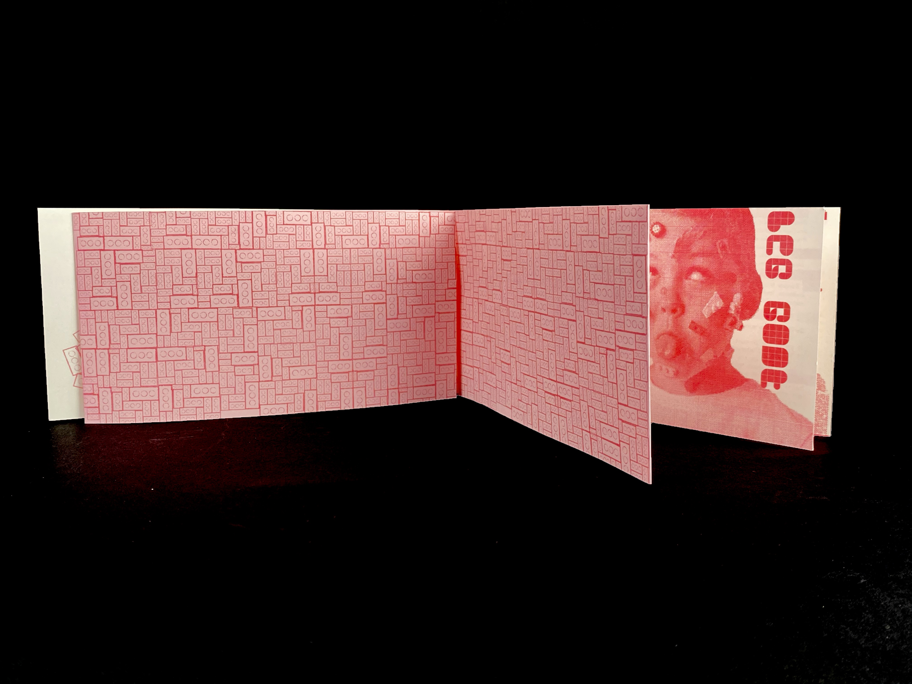
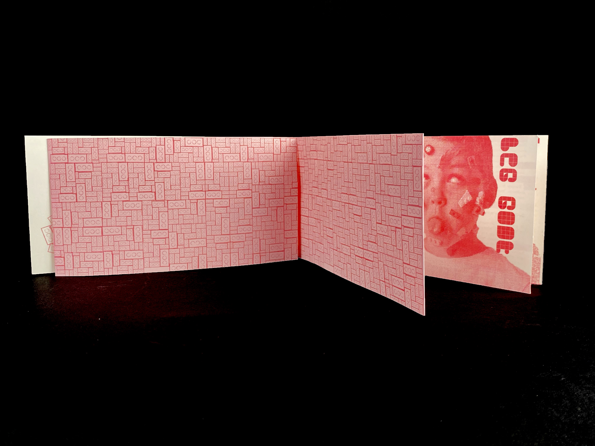

Ce projet est une expérimentation de l’objet du fanzine et de l’impression en risographie. L’identité du projet est basée la culture alternative de l’objet et la mise en valeur des imperfections dans la création. La typographie des titrages a été crée sur glyphe spécialement pour ce fanzine. Ce projet a été mené à l’issue d’un workshop en groupe encadré par le graphiste Adrien Herzog.
Fanzine Lego
Design éditorial
 
